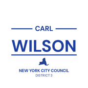
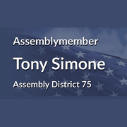
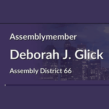

The district
 City Council
City Council State Assembly
State Assembly Congress
Congress Subway
Subway Citi Bike
Citi Bike NYC Ferry
NYC FerryTurn layers on and off. Tap an official's logo or a board's seal for its page. Zoning and land use lot by lot are on the land use map.
About
State Senator Erik Bottcher represents State Senate District 47. It sits in Manhattan.
The district overlaps community boards Manhattan 2, Manhattan 4 and Manhattan 7.
It is policed by the 6th, 10th, 14th, 18th, 20th, 22nd and 24th Precincts.
It overlaps council districts 3, 6 and 7 and Assembly districts 66, 67, 69 and 75.
Members of the State Senate serve two year terms.
Next on the ballot in November 2026. Find your poll site and sample ballot there, or see what is coming up on the calendar.
State Senate District 47 in numbers
U.S. Census Bureau, American Community Survey 2019-2023 5-year estimates.
Committees
Contact
Overlap
Community boards


Bars show how many of the district's election districts fall in each board.
Overlapping elected officials








| Manhattan CB 4 | 43% of the senate district | 94% of it |
| Manhattan CB 7 | 40% of the senate district | 82% of it |
| Manhattan park/airport area | 12% of the senate district | 35% of it |
| Manhattan CB 2 | 5% of the senate district | 16% of it |
| 20 Precinct | 25% of the senate district | 100% of it |
| 10 Precinct | 24% of the senate district | 97% of it |
| 18 Precinct | 15% of the senate district | 50% of it |
| 24 Precinct | 14% of the senate district | 62% of it |
| 22 Precinct | 12% of the senate district | 35% of it |
| 6 Precinct | 5% of the senate district | 27% of it |
| 14 Precinct | 4% of the senate district | 20% of it |
| Sector 22D | 12% of the senate district | 99% of it |
| Sector 10C | 10% of the senate district | 100% of it |
| Sector 20A | 10% of the senate district | 100% of it |
| Sector 18D | 8% of the senate district | 100% of it |
| Sector 10B | 8% of the senate district | 92% of it |
| Sector 20B | 8% of the senate district | 100% of it |
| Sector 24B | 8% of the senate district | 100% of it |
| Sector 20C | 7% of the senate district | 100% of it |
| Sector 24A | 7% of the senate district | 69% of it |
| Sector 10A | 6% of the senate district | 97% of it |
| Sector 18E | 4% of the senate district | 59% of it |
| Sector 6D | 3% of the senate district | 43% of it |
| School District 3 | 52% of the senate district | 50% of it |
| School District 2 | 48% of the senate district | 19% of it |
| Council District 6 | 50% of the senate district | 67% of it |
| Council District 3 | 43% of the senate district | 62% of it |
| Council District 7 | 6% of the senate district | 12% of it |
| Assembly District 67 | 34% of the senate district | 86% of it |
| Assembly District 75 | 32% of the senate district | 47% of it |
| Assembly District 69 | 27% of the senate district | 58% of it |
| Assembly District 66 | 7% of the senate district | 14% of it |